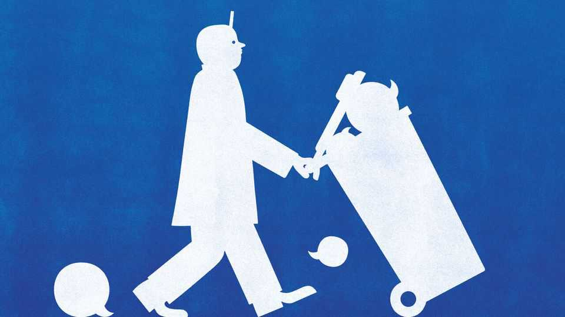

Death and dishonesty in British maternity hospitals
Yet another report paints a bleak picture
July 2nd 2026

Britons know too well that their National Health Service often provides poor care: in 2025 only 26% said they were satisfied with it, down from a high of 70% in 2010. Maternity care is a particularly bleak spot. A report by Baroness Valerie Amos, published on June 30th, concludes that mothers and babies are harmed across England in badly run hospitals incapable of learning from a litany of past investigations. But what still shocks are the lies.
Consider, if you can bear it, the story of baby Harriet Hawkins and her parents Jack and Sarah. It is detailed in a report published on June 24th by Donna Ockenden, a midwifery expert, into the failings at the Nottingham University Hospitals (NUH) trust between 2012 and 2025. Harriet died just before her birth in April 2016. Her mother had rung the maternity unit, repeatedly and in agony, asking to be admitted. She was told by midwives that she was “not in labour”. It was part of a policy of pressuring women to go home, or stay at home, in the early stages of labour. In total, Ms Ockenden concludes, there were nine missed chances to save Harriet.
What followed was “a systemic cover-up and investigations designed to mislead”, found Ms Ockenden. Vital information was withheld from the pathologist looking into Harriet’s cause of death. A second post mortem was held without the consent of her parents, who happened to work at NUH. A new, supposedly independent review appeared to have been heavily edited to deflect blame from the hospital. Once, when Dr Hawkins rang the hospital in distress, a secret recording was taken, and later played to others at a meeting.
Harriet’s story was emblematic of failings at NUH, says Ms Ockenden. She concludes that 162 mothers and babies suffered potentially avoidable deaths; hundreds more were seriously harmed. She describes a “toxic bullying culture” of senior midwives who gave simple cases to their friends and complex ones to junior staff to “see if they would sink or swim”. The trust pleaded guilty to criminal charges brought by the care regulator in 2025. A police investigation into possible corporate-manslaughter offences is under way.

Just as the Hawkins’ tragedy was far from isolated, the NUH scandal is symbolic of a far broader national failure. In 2009 the government said it hoped to halve the rate of maternal mortality; instead it has risen by 20%, leaving Britain behind many European peers(see chart). Last year £2.5bn ($3.3bn) was paid in compensation and associated costs for clinical negligence in maternity units, accounting for half of all medical payouts. The NUH fits within a grimly familiar pattern: over the past decade similar investigations were held into maternity units at Morecambe Bay (2015), Shrewsbury and Telford (2022), East Kent (2022) and Swansea Bay (2025). Ms Ockenden is running two more in Leeds and Sussex.
Cover-ups are the prevailing theme. In her national report, Baroness Amos concludes that NHS leaders often prioritise their reputations over learning from calamities. Investigations amount to hospitals “marking their own homework”, with their findings at odds with events. An ugly feedback loop follows. A fear of compensation claims, which will show negligence, incentivises doctors to claim that tragedies were unavoidable. But facing obfuscation and silence, families are driven to sue, as many have, because it is the only way they can hope to uncover the truth.
At NUH, that culture of denial resembled a conspiracy. Without naming perpetrators, Ms Ockenden repeatedly points the finger at consultant obstetricians and the executive team. The NUH leaders hankered to run a top research hospital, famous for training and pilots. And so cases where mothers were injured and babies had died were downgraded as “low harm” or “no harm” rather than NUH admitting they required investigation. Blunders were written off: there was a “massive emphasis on ‘avoidability’; anything deemed ‘unavoidable’ was not investigated,” one medic said. Board papers were rewritten to remove serious concerns. A report on a rise in babies undergoing treatment for oxygen deprivation was “substantially altered” because it “upset doctors”. Even Ms Ockenden’s path was stymied. Files were destroyed, even after her investigation began. Hundreds of current and former staff volunteered information. But of 66 specially sought out for interview, nearly half refused.
All that ought to have been impossible. British hospitals are bound by a “duty of candour”, requiring them to inform patients of serious mistakes that meet the threshold of causing “moderate harm”. It was introduced in 2014, after a similar scandal of poor care and cover-up at the Mid Staffordshire trust.
Yet it doesn’t work when clinical staff and managers simply lie. At NUH, the duty often wasn’t triggered, precisely because incidents were routinely misclassified as below the threshold of requiring candour. Indeed, reports of such cases fell notably at NUH after the duty was introduced. A rule intended to make hospitals more honest instead induced dishonesty.
There is a lesson for Andy Burnham, Britain’s probable next prime minister, who knows the “duty of candour” well. He was the health secretary during the Mid Staffordshire affair and wishes to apply a similar rule to the entirety of government, to end what he sees as a culture of state secrecy. But Ms Ockenden shows that a state cannot be compelled to tell the truth by passing new laws. It requires clearing out rotten cultures and rotten leaders.■
For more expert analysis of the biggest stories in Britain, sign up to Blighty, our weekly subscriber-only newsletter.